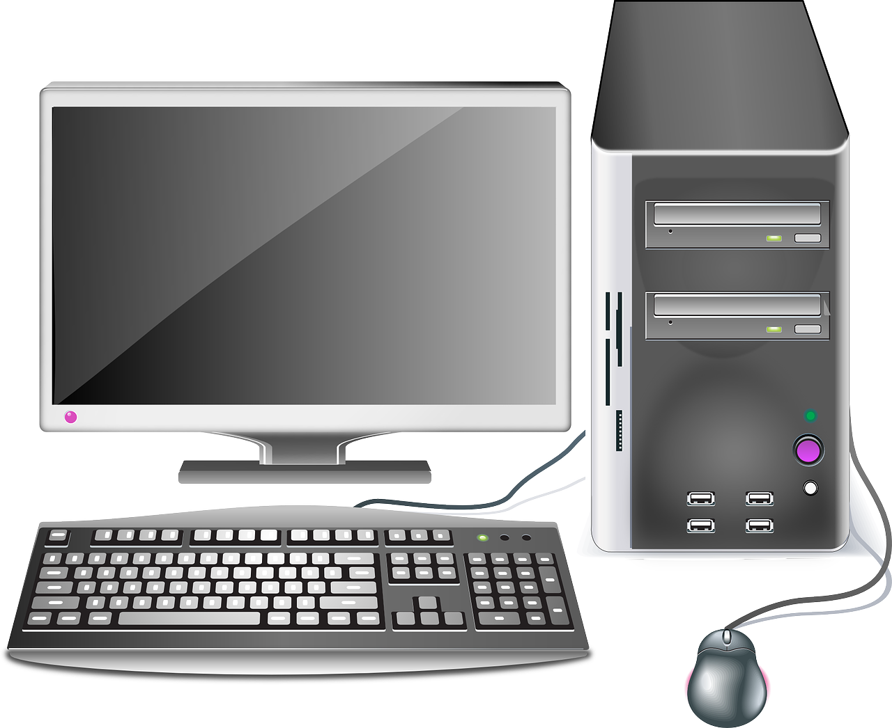
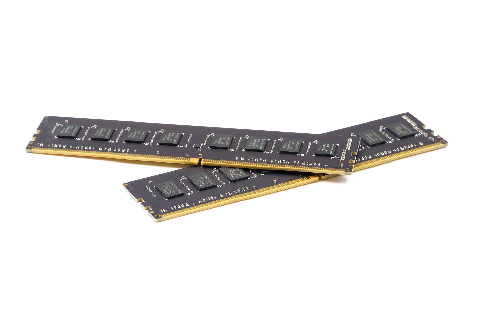

Tema 1: Conceptos Básicos de Informática
Componentes de un Ordenador.

| Componentes Físicos (Hardware) | Componentes Lógicos (Software) |
|---|---|
| Elementos del ordenador que podemos ver y coger | Todos los programas y la información que se guarda en el ordenador. La podemos ver pero no coger |
| Ejemplos: teclado, ratón, monitor, torre… | Ejemplos: Sistema operativo (windows, lliurex…), programas o aplicaciones (explorador de internet, Instagram, Procesador de Textos…) y datos (documentos, fotos, vídeos, música…) |
Periféricos.
Son los componentes hardware situados fuera de la torre.  Tipos:
-
Periféricos de Entrada: Dispositivos que introducen información en el ordenador. Ejemplos: teclado, ratón, CD de lectura, micrófono, escáner, webcam, cámara de fotos, cámara de vídeo…
-
Periféricos de Salida: Dispositivos que extraen información del ordenador. Ejemplos: monitor, auriculares, altavoces, impresora…
-
Periféricos de Entrada y Salida: A través de estos componentes podemos introducir o sacar información del ordenador. Ejemplos: Pen (pendrive, usb, lápiz), disco duro externo, pantalla táctil, Router, CD, DVD.
Disco Duro y Memoria RAM.
-
Disco Duro: Es un dispositivo de almacenamiento donde se guardan todos los programas, juegos, el sistema operativo (Windows o Lliurex) y los datos (vídeos, fotos, música, documentos…). Todo se guarda permanentemente y no se borra cuando apagamos el ordenador.
-
Memoria RAM: Es un dispositivo de almacenamiento donde se guarda todo lo que en este momento estamos utilizando en el ordenador (tanto programas como datos). Todo se guarda temporalmente y se borra cuando apagamos el ordenador. 
El Microprocesador (CPU):
Es el dispositivo que funciona como el cerebro del ordenador. Se encarga de tomar las decisiones y de organizar el trabajo de todos los componentes.
El Sistema Binario. Unidades de Medida.
El sistema que utiliza el ordenador para guardar información es el binario (0 o 1).
Las unidades de medida que utiliza para saber cuánto ocupa la información son:
BIT (0 o 1)
BYTE (8 bits)
KILOBYTE KB (1024 Bytes)
MEGABYTE MB (1024 KB)
GIGABYTE GB (1024 MB)
TERABYTE TB (1024 GB)
PETABYTE PB (1024 TB)
EXABYTE EB (1024 PB)